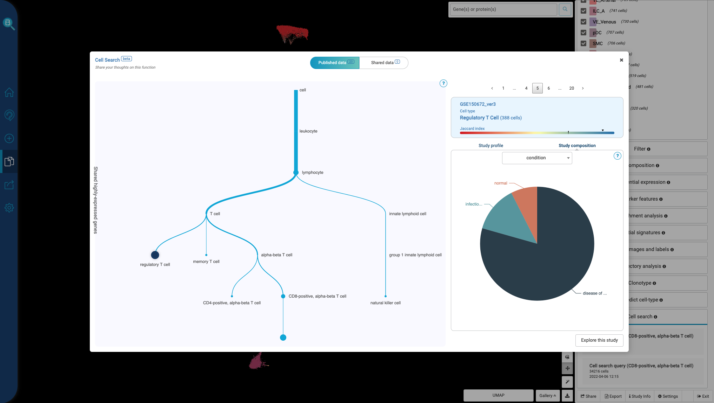
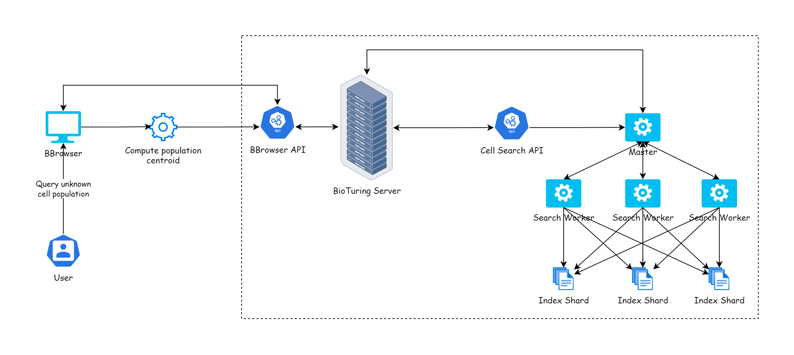

A primary bottleneck in single-cell transcriptomics is cell type annotation, a manual process requiring researchers to compare experimental expression values against fragmented marker gene literature. The BioTuring Cell Search engine solves this by transforming cell classification into an algorithmic search and retrieval task.
By leveraging BioTuring’s curated reference database, the system executes high-dimensional distance queries to identify annotated populations with identical expression behaviors. This allows researchers to immediately map unknown clusters to high-confidence cell identities in near real-time.
Researched and implemented specialized similarity metrics to accurately evaluate matrix correlation profiles across highly variable contexts. Designed mathematical normalization paths to overcome differences in single-cell sequencing platforms, quantification units, and batch effects.
Architected the core execution engine and built production-ready backend API service structures. Optimized query paths to perform lightning-fast similarity lookups across multi-million-cell expression profiles without introducing computational lags.
Developed the frontend interactive search modules, providing a clean portal for laboratory teams to execute queries, manipulate thresholds, and visually interpret statistical alignment metrics against reference database layers.